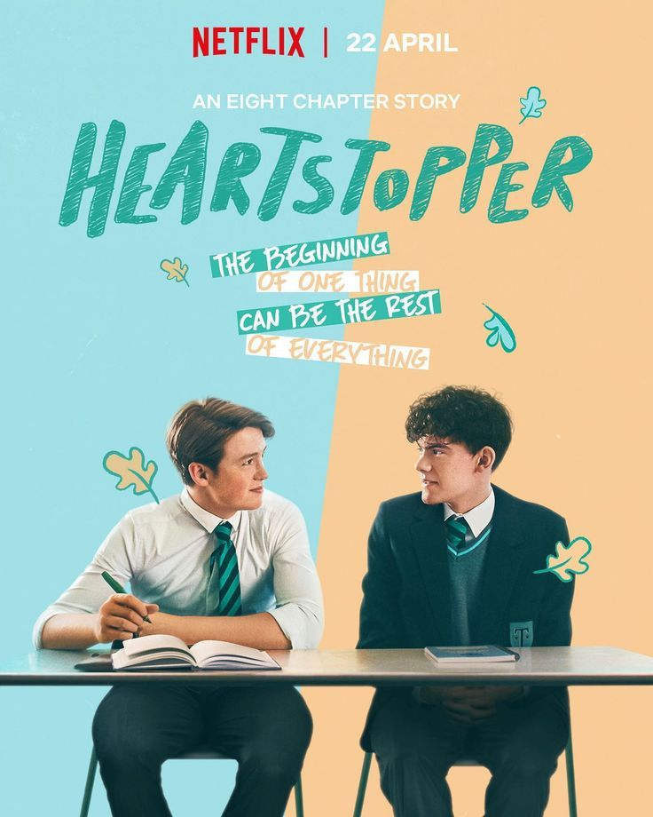

Hearstopper
Fecha de estreno: 22 de abril de 2022
Sinopsis: Heartstopper sigue la historia de Charlie Spring, un joven que ha sido víctima de bullying por ser gay. Un día, durante una clase de dibujo, se sienta al lado de Nick Nelson, un popular jugador de rugby. A medida que se conocen, Charlie y Nick desarrollan una profunda conexión que florece en una hermosa historia de amor y amistad. La serie explora temas de identidad, aceptación y el crecimiento personal de los personajes en su viaje para entender sus sentimientos y su lugar en el mundo.